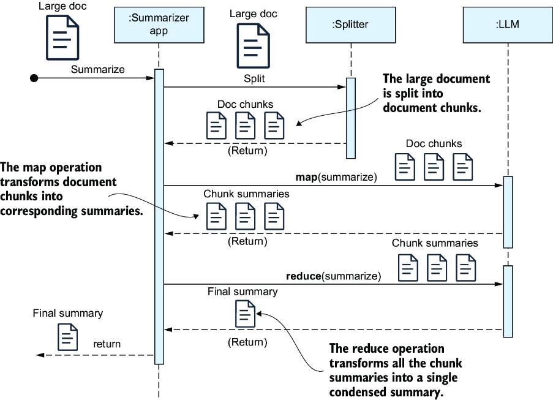
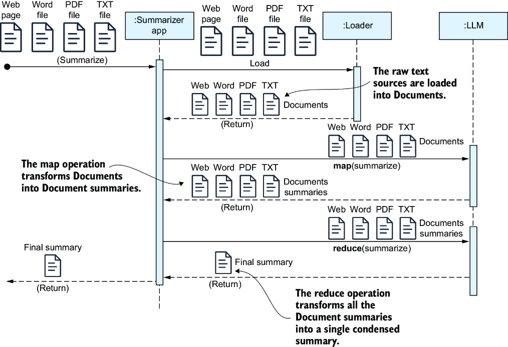
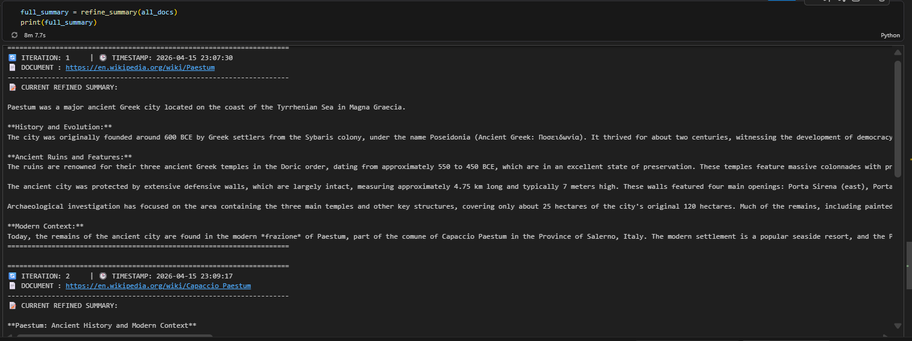
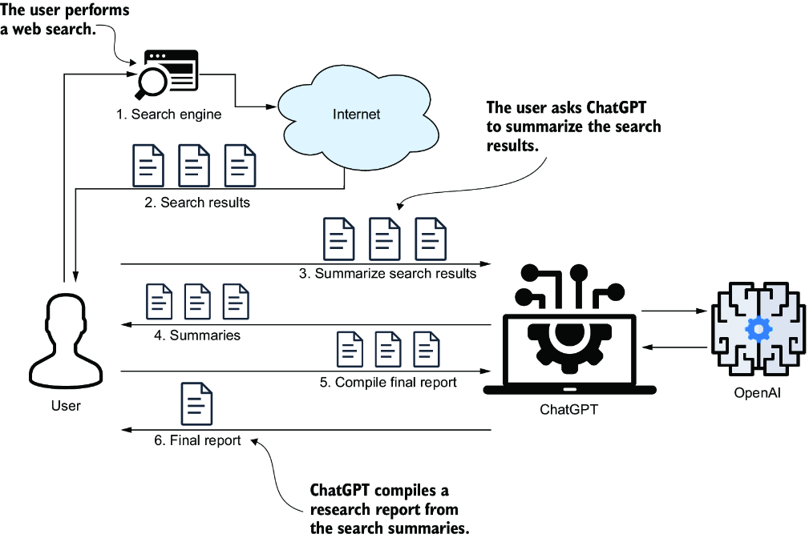
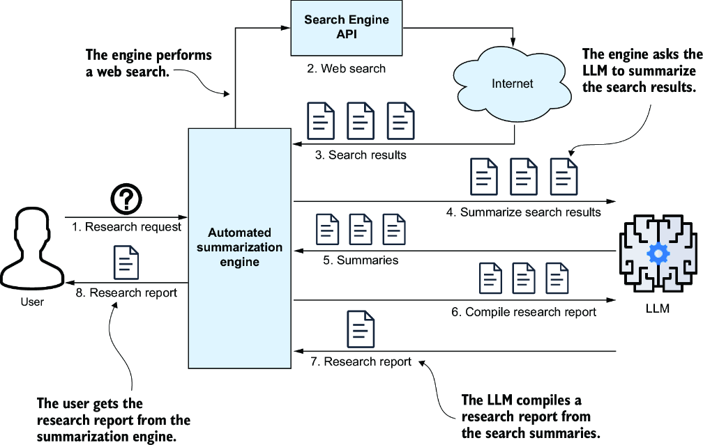
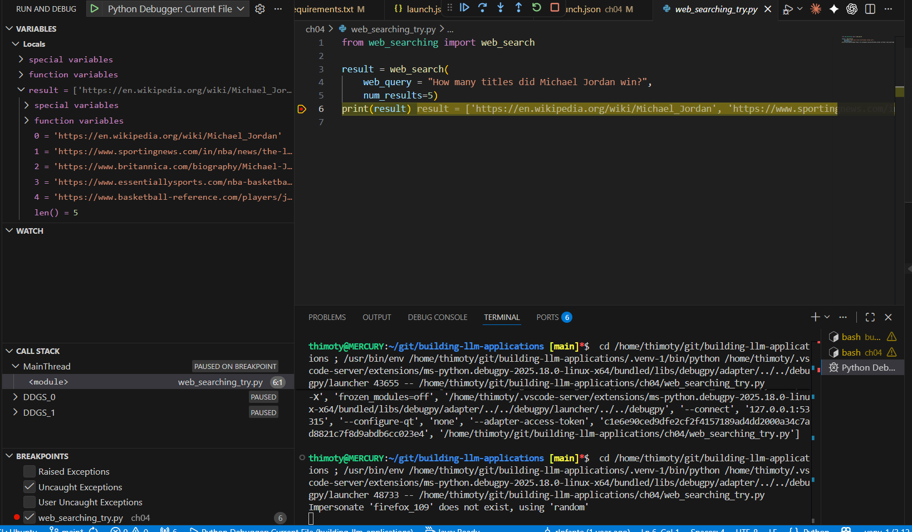
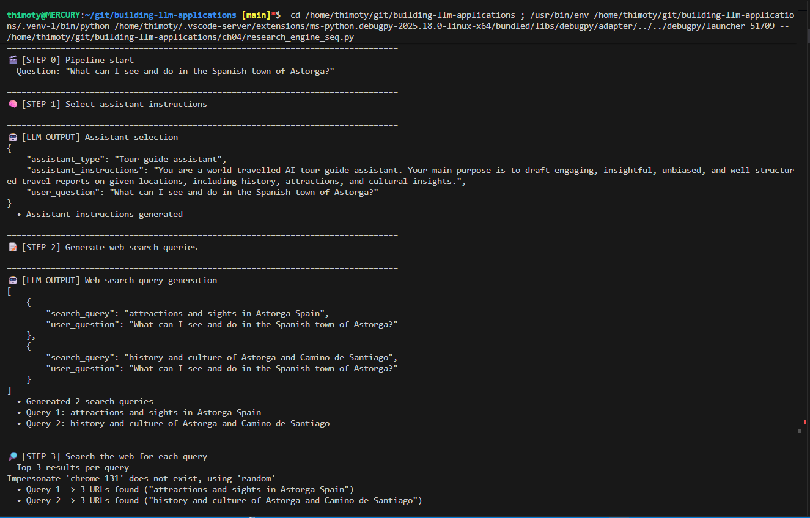
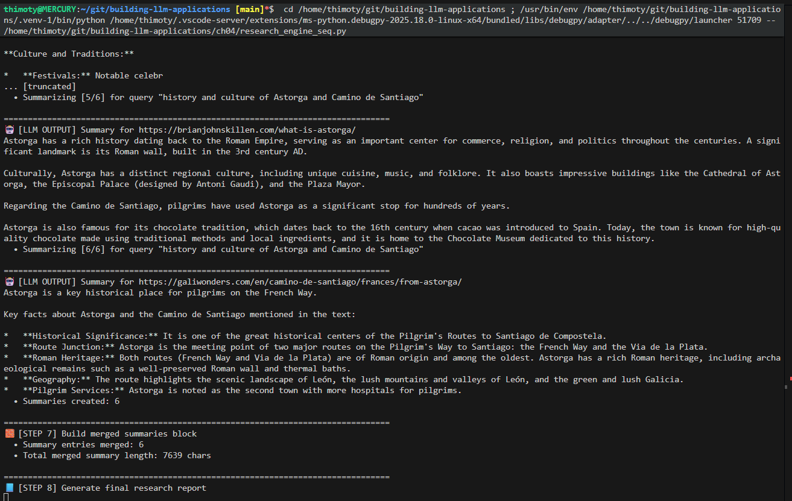
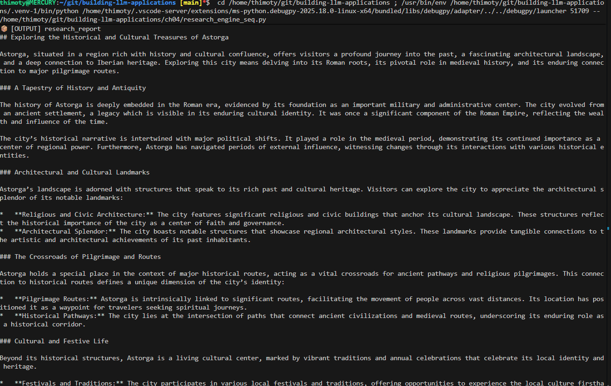

Learning outcomes
- Analyze the limitations of LLM context windows and the need for scalable summarization.
- Implement MapReduce and Refine strategies using LangChain and LCEL.
- Select the optimal summarization technique based on document count, size, and context requirements.
- Manage multi-document ingestion from various sources like Wikipedia, PDF, and DOCX.
Topics
Context window limits, MapReduce vs. Refine strategies, document loaders, and LCEL chain composition for summarization.
1. The Need for Automated Summarization
In modern data-driven environments, the volume of text information—from technical reports to entire books—frequently exceeds the capacity for manual review. Summarization engines are essential tools for automating the condensation of large document sets, a task that remains impractical and costly to perform manually even with general-purpose AI interfaces.
1.1 Context Window Constraints
Every Large Language Model (LLM) is constrained by a context window: the maximum number of tokens (words or characters) it can process in a single prompt. While newer models offer expanded windows, many production scenarios involve documents that still exceed these limits. Automated techniques allow developers to bypass these physical constraints by processing data in manageable segments.
1.2 Beyond Basic Prompting
While simple documents can be summarized using a basic prompt, real-world applications require more robust patterns. Using LangChain Expression Language (LCEL), we can build sequences of connected operations where the output of one step informs the next. This modular approach is the foundation for handling long-form content, consolidating multiple files, and preparing data for advanced AI agent architectures.
2. Summarizing Large Documents
When a single document exceeds the LLM’s context window, we must employ strategies that process the text in parts while maintaining the overall information integrity. The most common pattern for this scenario is the MapReduce approach.
2.1 The MapReduce Workflow
The MapReduce technique breaks down the summarization task into three distinct stages:
- Chunking: The large document is split into smaller, overlapping segments (chunks) using a tokenizer. This ensures each piece fits comfortably within the model's token limit.
- Map Stage: Each chunk is sent to the LLM independently and in parallel to generate an individual summary for that specific segment.
- Reduce Stage: The individual summaries from the map stage are combined into a single text, which is then summarized one final time to produce the cohesive global summary.

3. Summarizing Across Multiple Documents
In many real-world scenarios, you need to combine insights from various data sources rather than processing a single long text. This requires techniques for loading content from different formats and consolidating it into a coherent summary.
3.1 Multi-Source MapReduce
The MapReduce pattern can be extended to handle multiple documents (e.g., Wikipedia pages, Word files, PDFs). Each document is loaded into a Document object, mapped to an individual summary, and then reduced into a final consolidated output. This approach is highly scalable as each document can be processed in parallel.

3.2 The Refine Technique
Unlike MapReduce, the Refine technique is an incremental process. A final summary is constructed step-by-step by iteratively summarizing the combination of the current summary and the next document. This continues until all documents have been processed. This method is slower (sequential) but often preserves more context and nuances across documents than MapReduce.

3.3 Summarization Flowchart
Selecting the right technique depends on the document count, size, and your tolerance for latency or information loss. The following flowchart provides a decision matrix to choose between Stuffed prompts, MapReduce, or Refine based on the context window and the nature of the data.


4. Creating a Research Summarization Engine
A research summarization engine represents a more advanced application of the techniques discussed so far. Instead of summarizing a static document, this engine dynamically gathers information from the web to answer complex user queries.
4.1 Engine Overview
When researching a topic manually, you typically perform a web search, sift through pages, take notes, and compile a final summary. A semiautomated approach involves using an LLM to summarize each search result individually before manually consolidating them into a final report.

A fully automated research engine goes a step further by automating the entire pipeline: performing web searches, scraping content from multiple URLs, and synthesizing a comprehensive research report without human intervention between steps.

4.2 Core Engine Components
Building a research engine requires two fundamental capabilities beyond the LLM itself: the ability to find relevant information on the web and the ability to extract clean text from those pages.
- Web Searching: Utilizing search engine wrappers like
DuckDuckGoSearchAPIWrapperallows the engine to programmatically retrieve a list of URLs based on generated queries without requiring complex API keys.
Implementation: web_searching.py
Test script: web_searching_try.py - Web Scraping: Once URLs are identified, libraries like
BeautifulSoupandrequestsare used to fetch and parse the HTML content, stripping away navigation menus and ads to provide clean text for the LLM to process.
Implementation: web_scraping.py

web_searching_try.py.4.3 Query Rewriting and Multi-Query Generation
A single user question is often too broad or ambiguous for a search engine to return highly relevant results. To overcome this, we use Query Rewriting: an LLM processes the original question and generates multiple, more specific search queries. This ensures a broader coverage of the topic and provides diverse perspectives for the final synthesis.
While this initial approach is implemented sequentially—which increases the total processing time—it serves as the foundation for the more efficient parallel execution patterns we will explore using LCEL.
4.4 Prompt Engineering for Research
The success of an automated research engine relies on carefully crafted prompts that guide the LLM through different specialized tasks. We maintain these templates in a centralized prompts.py file for modularity and easier refinement.
Key prompts used in this architecture include:
- Assistant Selection: Determines the most relevant persona (e.g., "Tour Guide", "Technical Expert") and sets its specific operating instructions based on the user's question.
- Web Search Generation: Rewrites the broad user query into multiple, specific, and optimized search terms for DuckDuckGo.
- Content Summarization: Guides the LLM to extract only the most relevant facts and details from a raw, scraped web page while ignoring noise (ads, navigation).
- Research Report Synthesis: The final stage prompt that compiles all intermediate summaries and source URLs into a coherent, structured Markdown report.
Implementation: prompts.py
4.5 Sequential Research Pipeline
The first complete version of the engine follows a sequential pipeline. While slower than parallel execution, this linear flow is easier to debug and demonstrates the logical progression of information through the system.
The execution steps in the research_engine_seq.py implementation are:
- Assistant Selection: The LLM analyzes the query to choose the best research persona.
- Search Generation: The original question is rewritten into multiple optimized search queries.
- Execution Loop: The system iterates through each generated query, performing a web search and retrieving result URLs.
- Scraping and Summarization: For each URL, the content is scraped, cleaned, and summarized individually.
- Final Synthesis: All individual summaries are combined into a final structured research report.
Full Pipeline Code: research_engine_seq.py



Guided lab
Execution steps
Explore hands-on implementations of summarization chains by running the notebooks in the ch03 and ch04 folders of the code repository. The lab covers TokenTextSplitter usage, full MapReduce LCEL chains, the implementation of the Refine technique function, and building a complete automated research summarization engine.
Setup for Chapter 4
To run and debug the research engine, follow these environment setup steps:
- Create Virtual Environment: Navigate to the
ch04folder and run:python3 -m venv env_ch04 - Activate & Install: Activate the environment and install dependencies:
source env_ch04/bin/activate && pip install -r requirements.txt - Configure Debugger: To use the VS Code debugger, ensure your
.vscode/launch.jsonis correctly configured to use the local virtual environment interpreter.
Reference: Example launch.json
Access the materials here:
Key takeaways
- MapReduce and Refine are core patterns for processing documents that exceed LLM context limits.
- Automated Research Engines combine web search wrappers, scraping tools, and multi-stage summarization into a single pipeline.
- LCEL facilitates the parallelization of these tasks, significantly improving efficiency when handling multiple web sources.
- A clear decision flowchart helps select the right strategy based on document volume, size, and required context integrity.